<Audio N> 指明是谁在说话。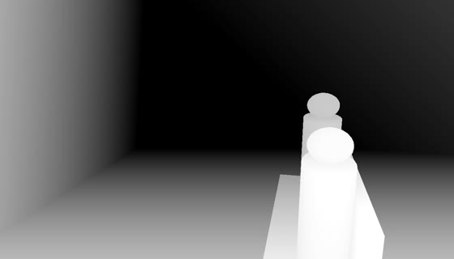
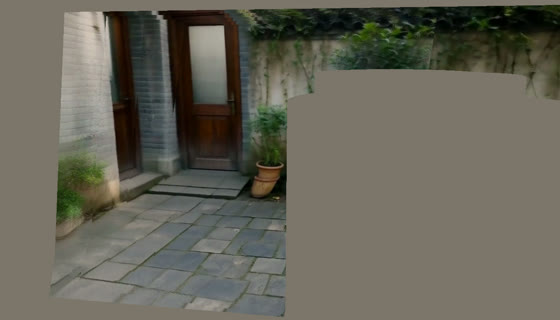
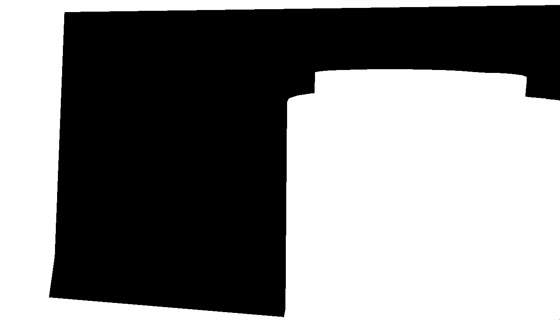
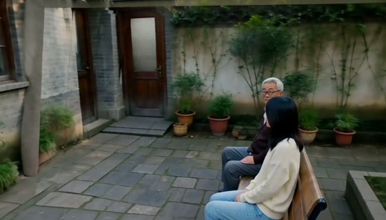
| 输入 | 内容 | 格式 / 参数 |
|---|---|---|
| 底模与任务 | w00：H3 基础版，任务 v2av_control（深度 + 文字）；w01 起：H3 参考版（transformer_ref），任务 ref2av_control，可以吃参考图、音频、视频 | MiniMax-H3，音视频联合生成；我们给参考版补接了 inpaint 通道（原本只有基础版有） |
| ① 控制视频 | 深度，人物为占位人偶（或 SMPL） | Fun-ControlNet-Union-2.0，强度 1.0，作用于全部去噪步。支持多路融合，写法 路径=强度@起:止#区域掩码，例如 SMPL 深度 @0:0.375（只在前 3 步）+ 占位深度 @0.375:1 |
| ②③ 场景记忆 | 保留像素视频 + 掩码（黑 = 保留，白 = 生成）；被遮处填 ImageNet 均值灰 | 挂在第一路深度控制上。F2 里非重叠帧平均有 w01 9%、w02 约 0%（走廊和后院之前没见过）、w03 13%（最多 62%）的像素来自记忆；重叠帧 100% |
| ④ 参考图 <Picture N> | 每人一张两视角设定图（CLIP 核验身份） | REF_IMAGE；同一人只给一张，避免被画成两个人 |
| ⑤ 参考音频 <Audio N> | 每人第一句台词的音频（whisper 词级对齐切出） | REF_AUDIO，在 prompt 里写成“某人的音色参考” |
| 参考视频 <Video N>（可选） | 动作参考，例如 SMPL 灰模从目标相机渲染 | REF_VIDEO，必须去掉音轨，否则也会被当成音频参考；多人加人物图时灰模外观会泄露 |
| ⑥ 文字 prompt | w00 用“镜头描述 + 声音”格式；w01 起用 Ref2VA 六段式：subject_definitions / summary / retention_analysis / detailed_description / overall_soundscape / non_diegetic_music | 台词写法 (S1) … says: <d>[Chinese] …</d>，时间点写 At 00:12.900,。目前按剧本手写模板，记忆库自动填入参考编号和音色描述 |
| 采样 | 8 步加速 LoRA（基础版 fl2v、参考版 ref2v 各自的 turbo 8-step），shift 6/3 与 12/3，seed 43 | 1344×768，24 fps，362 帧（17n+5，约 15 s）；4 张昇腾 910B2 张量并行，每窗口约 10–15 分钟 |
subject_definitions: <Subject 1> is Yu in <Picture 1> (2 views of the same single person, side by side), a young woman in her early twenties with shoulder-length black hair, a cream knit sweater, light-blue jeans, white sneakers and a canvas tote bag on her shoulder, with the exact face, hair, build and clothes as seen in <Picture 1>. <Subject 2> is Old Zhou in <Picture 2> (2 views of the same single person, side by side), the shop owner, a man in his sixties with short grey hair and round reading glasses, a dark brown cardigan over a white shirt and grey trousers, … <Audio 1> is the voice-timbre reference for <Subject 2> (S1). <Audio 2> is the voice-timbre reference for <Subject 1> (S2). summary: [reference generation + audio reference] One unbroken eye-level shot circling a wooden bench in the small back yard of an old bookshop, where <Subject 2> gives <Subject 1> a mended old book and she thanks him; … detailed_description: … At 00:02.800, <Subject 2> (S1) hands <Subject 1> the book and, using the warm, slightly husky old man's voice timbre referenced from <Audio 1>, says: <d>[Chinese] 这本书我修好了，送给你。</d> At 00:06.000, <Subject 1> (S2) smiles and, using the clear, light young woman's voice timbre referenced from <Audio 2>, says: <d>[Chinese] 谢谢周叔！</d> They are the only 2 people; no text or lettered signs appear.
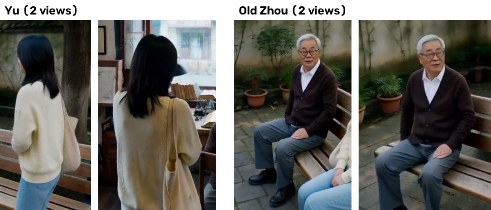
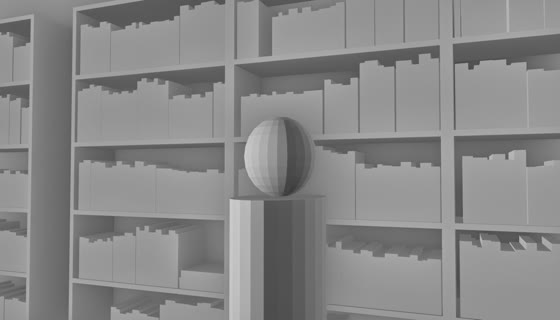
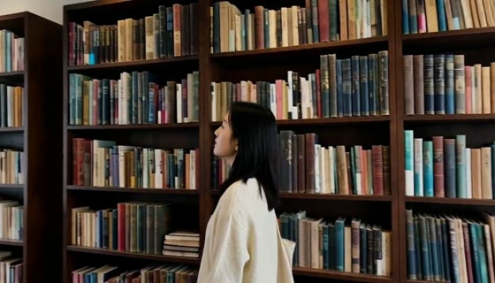
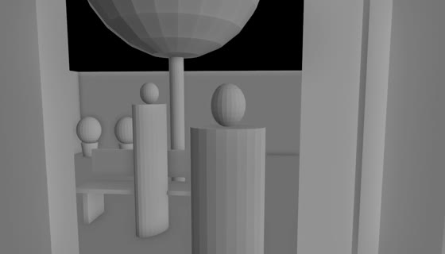
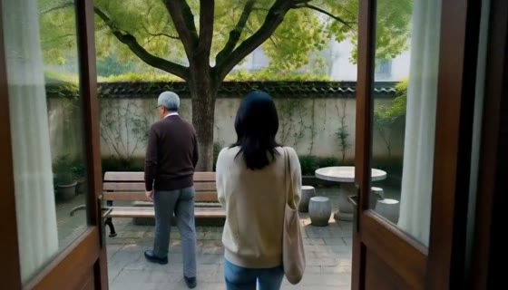
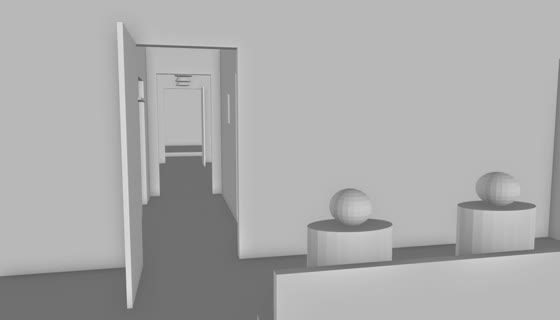
search_ref 用中文关键词搜 B 站，Claude 看帧打分：单人、静止机位、全身入镜、动作匹配。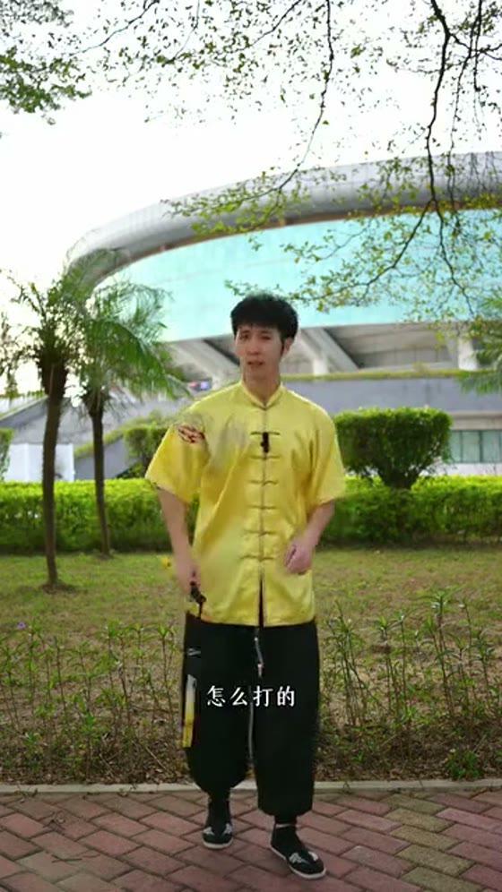
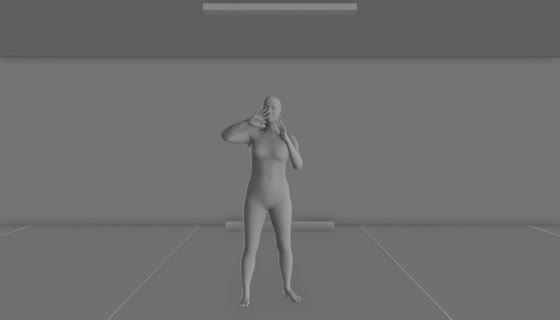
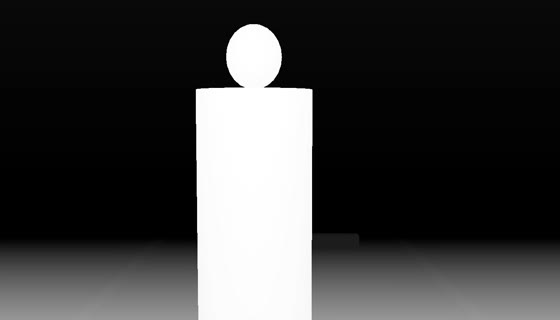
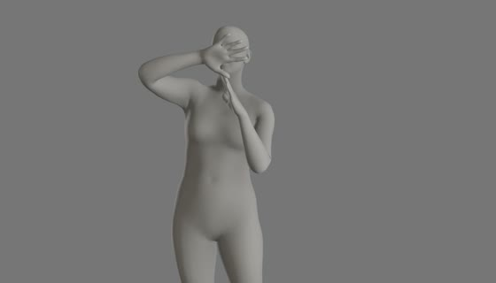
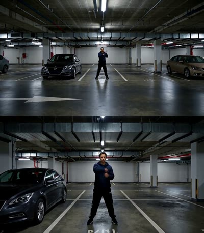
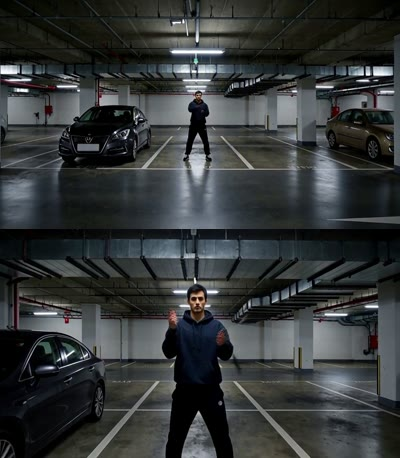
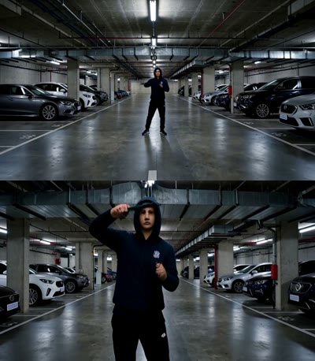
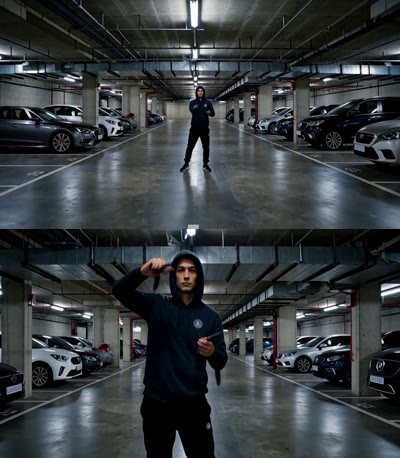
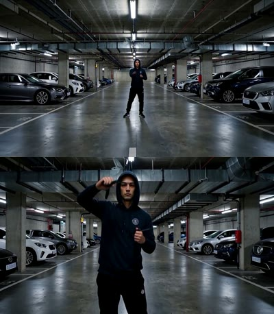
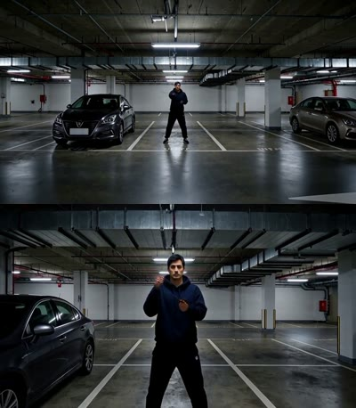
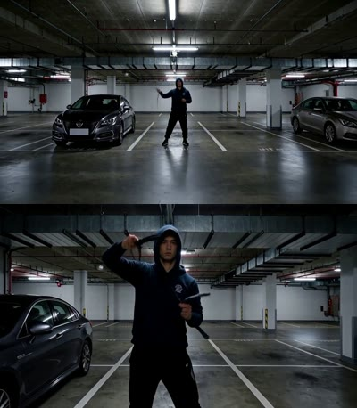
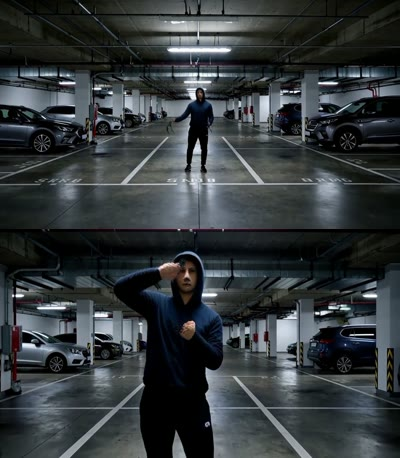
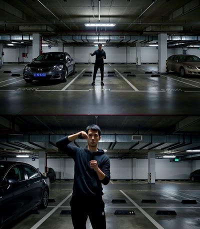
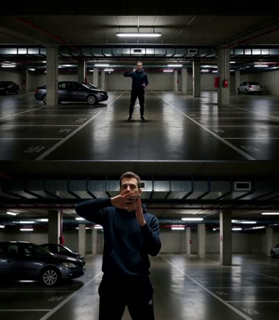
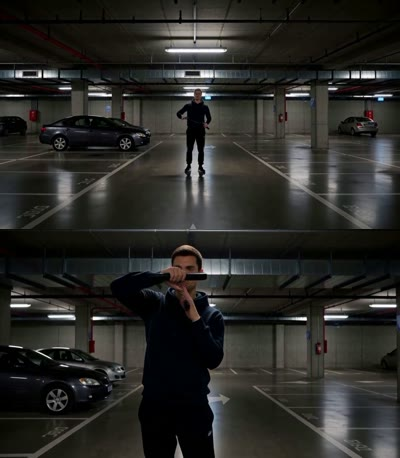
| 工作 | 做什么 | 几何从哪来 | 跨段记忆 | 声音 | 一镜到底 | 代码 |
|---|---|---|---|---|---|---|
| World Narrative Model 2026-06 | LLM 写 Blender 脚本搭 4D 白模，渲染后交给 Seedance 2.0；检查碰撞、穿模、遮挡 | 白模（RGB 作条件） | 无 | 无 | 否 | 无 |
| H3 Max 3D-to-Video（fal） | 人工搭 Blender 白模 → H3 后训练版 | 人工白模 | 无 | 有 | ≤15 s | 仅 API |
| 3DScenePrompt ICLR'26 | 动态 SLAM 重建静态点云，投影作条件；全量微调 | 估计（SLAM） | 场景 | 无 | 续写 | 未见 |
| AnchorWeave / Memorize When Needed / GEN3C | 局部点云检索 / 相机感知记忆门控 / 3D cache | 估计 | 场景（需训练） | 无 | 续写 | 有 |
| MosaiChunk 2026-10 | H3 自回归版 + 历史 KV 拼接记忆，只训路由器 | 无 | KV（需训练） | 无 | 长视频 | 有 |
| UnityShots 2026-06 | LTX-2.3 多镜头音视频，长短期记忆槽 + 说话人参考 | 无 | 人物 + 音色（需训练） | 有 | 否（多镜头） | 有 |
| CineMaster 2025 | Blender 里放 3D 方盒 + 相机，渲染方盒深度作控制 | 3D 方盒 | 无 | 无 | 否 | 未声明 |
| 我们 | 剧本 → LLM 搭世界 + 射线校验 → 深度 + 占位人偶 → H3 分窗口 → 三模态记忆 + 校验重跑 | 白模精确几何 | 场景 + 人物 + 音色，不训练 | 有 | 是，55 s | — |
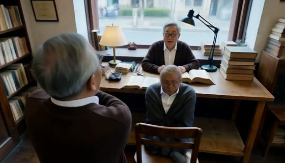
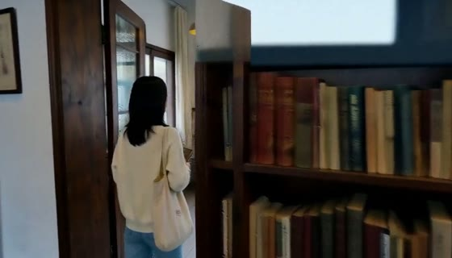
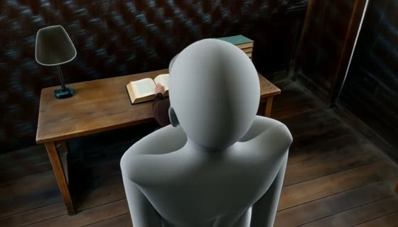
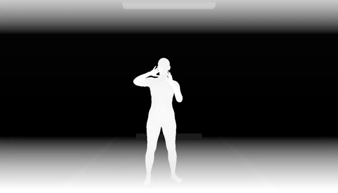
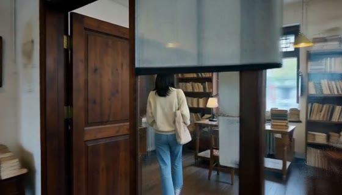
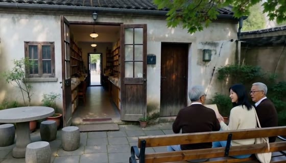
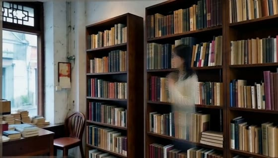
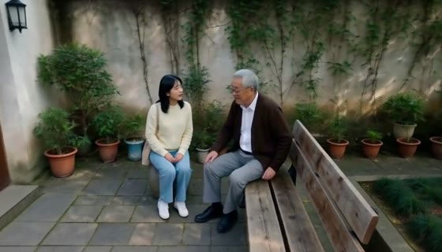
| 尝试 | 现象 / bug | 结论 / 处理 |
|---|---|---|
| 骨架（pose）控制 | 即使限定区域、只在早期步，也会改变整体布局、伤画质 | 不用骨架；车库案例里只在第 1–3 步加骨架是旧编码下最好的折中 |
| SMPL 人体深度（动作段） | 动作跟得紧，但同伴实验显示比“方盒 + 参考动作”僵 | 改用占位深度；“只在早期步参考 SMPL”在验证中 |
| LLM 修复回路 | 为通过“被拍的人被挡”检查，把看人改成看空间固定点（钻空子） | 修复结果要人工复核；改为结构性的“沿人物路线跟拍” |
| 门扇 | 开着的门扇贴着镜头，被画成怪平面 | 跟拍经过的门去掉门扇 |
| 人数校验 | 误判三次：橱窗玻璃后的人、中近景只拍到上半身、两人并坐时多出的大框 | 人数按区间判断，并对重叠框去重 |
| 工程 | 共享 NPU 抢卡导致 HCCL 初始化失败；远端文件还没写完就拷贝；ssh 无声断开 | 发射前等卡空、失败自动重发；拷贝前等文件大小稳定；ssh 保活 |